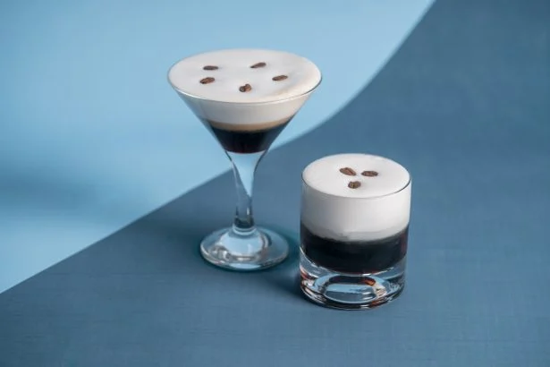

White Russian

Jeff Lebowski's favorite sip – where laid-back meets the White Russian
ripple.
In "The Big Lebowski," the White Russian is the signature drink of the
main character, The Dude. This vodka, coffee liqueur, and cream cocktail
reflects The Dude's laid-back personality, becoming a symbol of his love
for simplicity amid chaotic events in the cult classic film.
Ingredients
- vodka 4 cl
- coffee liquer 4 cl
- milk 3 cl
Steps
- Make the "White Russian" recipe directly in the glass.
- Pour ingredients into glass over ice cubes. Serve with a mixer.
- Serve in an "old fashioned" glass
- No decoration.